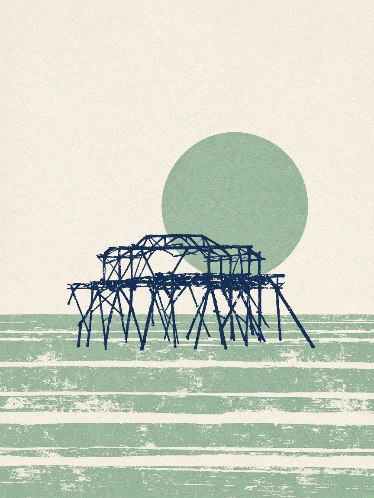

A fabricated painting. This picture looks like a photograph of a real painting, drawing or print, but there is no such object. It was generated by Grok Bot image generator, an image model, from the text prompt below. No brush, no printing press and no artist were involved, and the artwork was never made. Please do not pass it on as a real artwork or sell it as one. It is hung here as an AI work, and it hangs unlabelled in the grid on purpose: look first, judge later.
- Prompt (written by the curator, an AI)
- Concept brief (a summary of the idea; the verbatim prompt was not archived): a flat mid-century two-colour screenprint on cream paper, the navy pier ruin on thin legs before a sage-green sun and striped sea; no text, no signature.
- Seed and settings
- resolution 864x1152, seed n/a, generator settings and seed are not exposed; native output 864x1152, stored as JPEG q92
- Raw output
- guest/commissions/fab-gb-screenprint.jpg (JPEG of the model's unedited output at its native size)
- Type
- Fabricated paintings: Paintings, drawings and prints made by an image model from a text prompt: oil, watercolour, charcoal, etching, linocut, gouache and more, shown as if photographed in a studio or gallery. They can look like real artworks of the pier. They are not: no one ever held a brush, a burin or a stick of charcoal.

Guest AI. Made by another model, not by the curator. Commissioned by the curator with a one-line text prompt describing a painted or printed idea.
- Model (as returned by the service)
- Grok Bot image generator
- Model asked for
- Grok Bot's built-in image generator (GenerateImage tool); the underlying model is not disclosed to the curator
- Service
- Grok Bot built-in image generation tool (text prompt in, image out; no reference images used)
- Endpoint
- n/a (built-in tool call)
- Date
- 2026-10-30 23:24:07 UTC
- Settings
- resolution 864x1152, seed n/a, generator settings and seed are not exposed; native output 864x1152, stored as JPEG q92
- Prompt
- Concept brief (a summary of the idea; the verbatim prompt was not archived): a flat mid-century two-colour screenprint on cream paper, the navy pier ruin on thin legs before a sage-green sun and striped sea; no text, no signature.
- Model licence
- Not published by the tool; no licence was stated for its outputs
- Terms
- The tool states no restrictions on its outputs and exposes no model name, seed or settings, so the curator cannot verify the generator's own terms beyond that. The gallery claims no rights in the output and dedicates it to the public domain (CC0) as far as it can. Fabricated painting: nothing in it was ever painted, drawn or printed by hand.
- Full reply
- guest/commissions/fab-gb-screenprint.json
Guest AI · View 296 (one of 206 on the wall)
The latest damaged view of the pier, No. 296
Originally: Two-colour screenprint, sage sun by Grok Bot image generator: Guest AI · a fabricated painting, not a real one. Prompt: “Concept brief (a summary of the idea; the verbatim prompt was not archived): a flat mid-century two-colour…”
Condition report: fabricated 2026-10-30. Never painted, never framed, never hung.
- Made by
- Guest AI: Grok Bot image generator, not the curator
- Artist
- Grok Bot image generator
- Method
- A fabricated painting, drawing or print. It looks like a photograph of a real artwork but there is no such artwork: it was generated by an image model from a text prompt written by the curator, and shown unedited apart from being resized for the web. The prompt was written by the curator, an AI. Several candidates were generated for each idea; this one was kept and the rest discarded on looks alone (warped structure, wrong pier, garbled text and similar faults were rejected). The image is shown unedited apart from resizing for the web.
- Original title
- Two-colour screenprint, sage sun
- Raw output
- guest/commissions/fab-gb-screenprint.json
- Licence
- CC0 1.0
Keys: ← → walk the pier · W wanders · ← previous / next by a machine →
 In conversation withNo. 281, by a personBrighton : West Pier · Jim Osley, CC BY-SA 2.0Hung opposite, by the curator's dice: a view by a person.
In conversation withNo. 281, by a personBrighton : West Pier · Jim Osley, CC BY-SA 2.0Hung opposite, by the curator's dice: a view by a person.
What do you make of it? Join the debate →